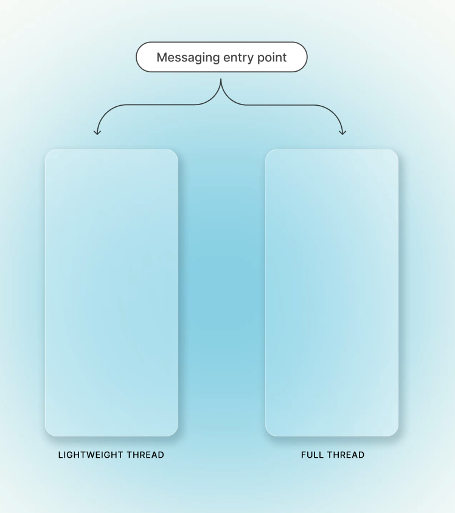

Facebook Messaging
As Meta scaled back 140M+ app switches from Facebook to Messenger and invested further in private sharing, I aligned the cross-functional team on a shared in-app messaging model to unify 40+ fragmented entry points around consistent destinations and behavior.
Within that model, I focused on the post-send experience, helping people continue conversations where they shared content privately with friends and family without losing context.
- Timeline
- 5 months · 2023
- Role
- Lead Product Designer
- Results
- +8–12% message sends
- Team
- Design
- Engineering
- Research
- Data Science
- Skills
- Interaction
- Systems
- Leadership
Problem
Sharing content often led into private conversations, but the experience became fragmented after Send. People could stay in Facebook, yet it wasn’t always clear what conversation experience they should enter, how to continue, or how to re-find the thread.
The challenge was preserving context when messaging was secondary, while still supporting a full conversation when messaging became the primary task.
I defined a shared in-Facebook messaging model that matched each entry point to the right conversation experience.
I aligned the team on a simple routing rule: the reason someone entered messaging determined which conversation experience they should land in.



ammerallj@gmail.com
Want the full story behind the work and how we got there? Let’s chat.